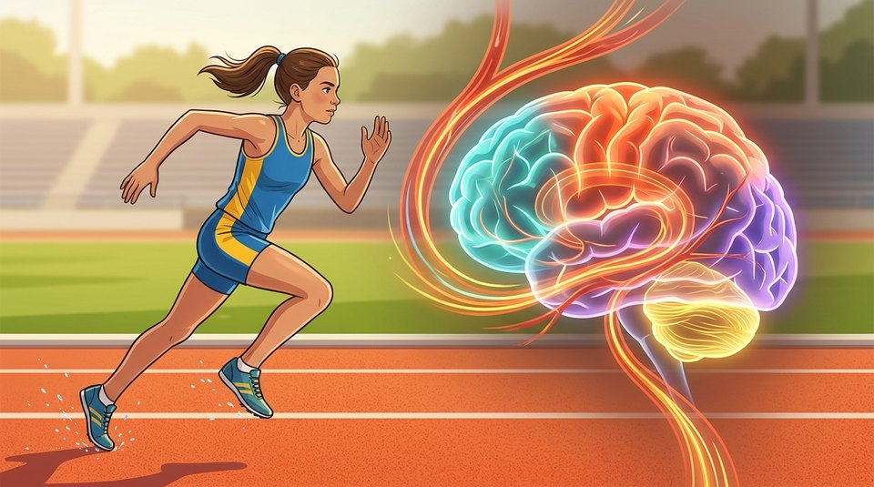

5e · 45 minA1 · Séance 1–2
Effort sportif et neuromythe des « 10 % du cerveau »
Comment les systèmes nerveux, cardiaque et respiratoire collaborent-ils lors d'un effort — et utilise-t-on vraiment « seulement 10 % » de notre cerveau ?
Inserm Canal Détox ; sujet DNB Métropole 2018 (18GENSCMEAG3)
Ouvrir l'activité A1 ↗